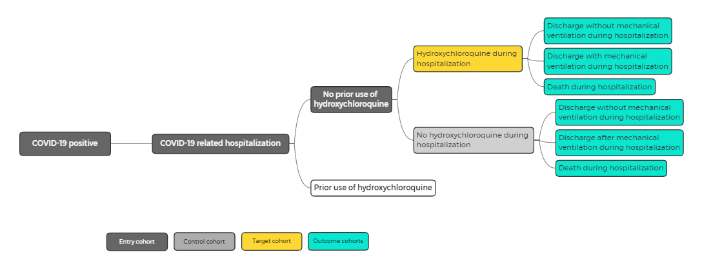

Studies
Study 1
RESEARCH QUESTION: For patients with new COVID-19 infection, how does the addition of hydroxychloroquine (HCQ) affect outcomes (mechanical ventilation, inpatient death)?
Background
Hydroxychloroquine and a related drug, chloroquine, are currently under study as possible treatments for COVID-19. Before randomized clinical trials read out, an observational trial can provide insight into the efficacy of this drug.
Study Design
The study involves inpatient use of HCQ and its effect on disease severity. The study involves two study groups (those receiving or not receiving HCQ), as depicted below:

Three outcomes are considered:
- Discharge without being placed on mechanical ventilation during stay
- Discharge after invasive mechanical ventilation (IVM) during stay
- Inpatient death
These outcomes correspond to three levels disease severity. They are retrospective over the entire patient visit and captures the worst severity of illness during the visit. The study uses mechanical ventilation as a proxy for severe but not fatal disease. If the patient succumbs to the disease, they would be classified as outcome 3, regardless of whether they were ventilated during the stay.
Siddiqi and Mehra have proposed a staging system for COVID-19 aligned to the stages of the disease, from early infection (Stage 1) to pulmonary involvement (Stage 2) to systemic hyperinflammation (Stage 3). That staging system focuses of the progression, rather than the severity of the disease, although clearly the two are related.
Cohorts
Definitions
COVID-19-positive: Clinical Dx of confirmed COVID-19 OR COVID-19 confirmatory lab test [1]COVID-19-positive-date: Earliest of (first confirmatory specimen collection date or first physician Dx)- Laboratory order date can be used in place of specimen collection date if the latter is unknown
COVID-19-related-hospitalization:COVID-19-positive-dateduring any hospitalization OR- (Hospitalization within 14 days after
COVID-19-positive-date) AND (any respiratory diagnosis at admission or during hospitalization) [2]
Prior-HCQ-use:- HCQ on admission medication list or outpatient medication list
Inpatient-HCQ-use:- HCQ medication administration during
COVID-19-related-hospitalization- Includes any dose, form, duration of HCQ
- Includes any level of disease severity while on HCQ
- Includes patients on other medications
- HCQ medication administration during
Study Groups
- All cohorts:
- Age at
COVID-19-positive-date≥ 18 years COVID-19-positive-dateafter Jan 1, 2020
- Age at
- Treatment Group:
Inpatient-HCQ-useAND NOTPrior-HCQ-use[3]
- Control Group:
- NOT
Inpatient-HCQ-useAND NOTPrior-HCQ-use[3]
- NOT
Outcomes
- Invasive Mechanical Ventilation (IMV):
- Any intubation procedure performed OR any mechanical ventilation-associated procedure performed during
COVID-19-related-hospitalization- Excludes supplemental oxygen (high or low flow), CPAP, and BiPAP
- Any intubation procedure performed OR any mechanical ventilation-associated procedure performed during
- COVID-19 Inpatient Death:
COVID-19 related hospitalizationAND patient death prior to discharge
Data Dictionary-Based Criteria
- Clinical Dx of COVID-19: Confirmed COVID-19 diagnosis code in
encounter.admitting_diagnosis,condition.code, orencounter.discharge_diagnosis - Inpatient encounter:
encounterwithencounter_class=IMP (inpatient encounter)orACUTE (inpatient acute)orNONAC (inpatient non-acute) - Patient death prior to discharge:
date_of_deathduringCOVID-19-related-hospitalization
Value Sets
- Confirmed COVID-19 diagnosis code
- Confirmatory lab test
- Respiratory diagnosis (clinical or billing code) -- ICD 10 J00-J99
- HCQ drug codes (for outpatient/admission medication list and inpatient medication administration)
- Any intubation procedure or mechanical ventilation-associated procedure performed
Notes:
[1] Study includes confirmed cases only
[2] Serves a confirmation that hospital admission is related to COVID-19 infection (as opposed to broken arm, etc.)
[3] Patients with prior use of HCQ (e.g., as treatment for autoimmune disease) are excluded from study